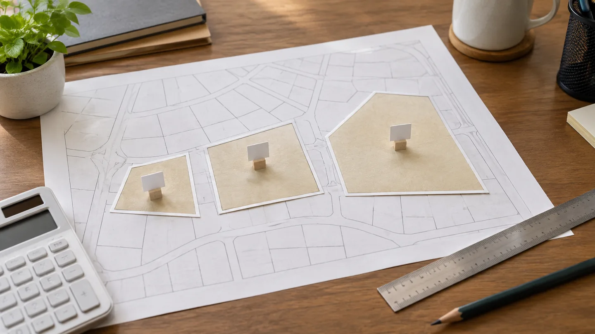
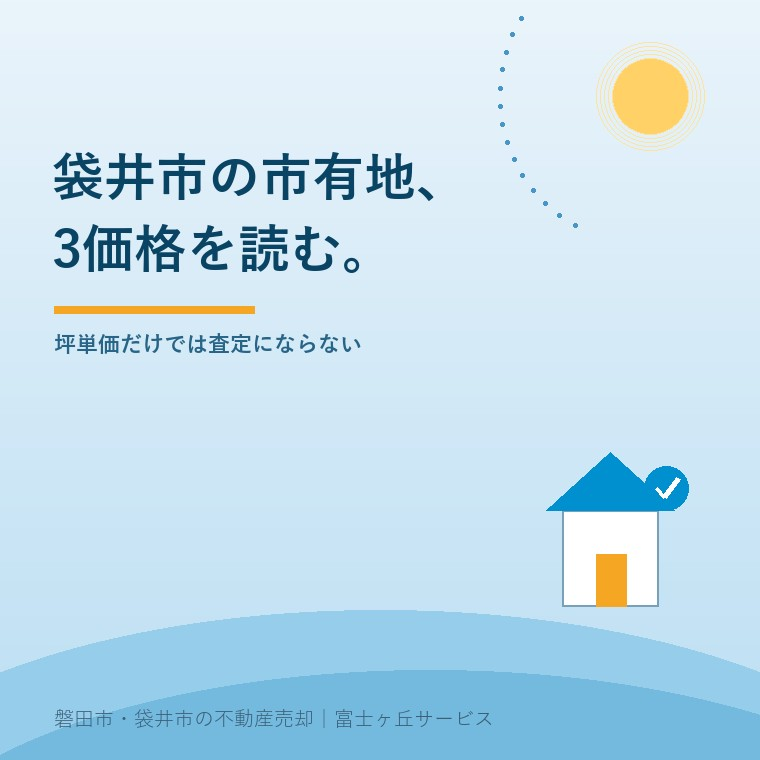

2026年9月9日｜カテゴリ：袋井市／査定／市有地


この記事の要点
Q. 袋井市の市有地3物件の予定価格を、自分の土地相場に使えますか。
A. そのままは使えません。予定価格を面積で割ると、小川町約4.47万円／㎡、栄町約6.13万円／㎡、上山梨3.82万円／㎡ですが、これは入札で下回れない価格です。現状有姿、用途・転売制限、地下残置物、引込み・調査費など条件が違います。所在地と面積が近いだけで自宅の査定単価にせず、道路・形状・利用条件を同じ土俵に置きます。
袋井市は2026年9月1日に参加申請の受付を始めました。締切は10月30日、入札日は11月10日です。
袋井市で土地査定を受けた方が、市有地の予定価格を見つけたら、自分の土地の値段と比べたくなります。市が金額を公表している以上、使わない手はない。ただし、総額だけを隣へ置くと判断を誤ります。
袋井市は2026年9月1日、「市有地を入札で売却します（募集）」を更新し、小川町、栄町、上山梨の宅地3物件について参加申請を開始しました。市のページと2026年11月版の応募要領を、記事公開日の9月9日に確認しています。
意外なのは、最も総額が高い小川町が、面積で割ると3物件の最高単価ではないことです。数字を比較できる形に直し、その後で土地ごとの重い条件を戻します。
3物件の予定価格を実測面積で割ると、小川町19番1は44,714円／㎡、栄町11番40は61,335円／㎡、上山梨3009番は38,200円／㎡です。
| 所在地 | 面積 | 予定価格 | 参考単価 |
|---|---|---|---|
| 小川町19番1 | 1,465.72㎡ 約443.38坪 | 65,538,000円 | 44,714円／㎡ 約14.78万円／坪 |
| 栄町11番40 | 303.53㎡ 約91.82坪 | 18,617,000円 | 61,335円／㎡ 約20.28万円／坪 |
| 上山梨3009番 | 171.21㎡ 約51.79坪 | 6,540,222円 | 38,200円／㎡ 約12.63万円／坪 |
参考単価は「予定価格÷実測面積」、坪単価は1㎡単価に3.305785を掛け、最後に丸めた算数です。袋井市が単価として示した数字ではありません。総額6,553万8,000円の小川町が高く見える主因は、約443坪という面積です。
袋井市の不動産GISで査定前に見る4項目を使えば、所在地、道路、用途地域、災害情報を地図上で確認できます。ただし、公表資料と現地の照合は別に要ります。
袋井市の予定価格は、その額以上でなければ落札できない入札の下限であり、落札価格、鑑定価格、近隣の平均成約価格と同じ数字ではありません。
参加者は予定価格以上を入れ、その中の最高額が落札する仕組みです。同じ最高額なら直ちにくじとなり、落札者がいなければ再入札は1回に限られます。予定価格どおりに買えるとは限りません。
民間の土地では、査定額は売れそうな額の予想、売り出し価格は売主の戦略、成約価格は交渉後の結果です。査定額・売り出し価格・成約価格の違いと、市有地入札の予定価格を一列に並べないでください。
予定価格の決め方を推測して「市がこの地域の相場を認めた」と広げるのも危険です。公開資料から確かめられるのは、入札の下限、土地の条件、手続です。市有地の最終成約額は入札後の結果です。
小川町19番1は旧市立高南幼稚園跡地で、戸建住宅敷地に用途が限られ、地下2〜4.5mには長さ2.5m分の基礎コンクリート柱が残っています。
第1種低層住居専用地域で、建ぺい率50％、容積率100％、最低敷地面積は200㎡です。分譲する場合は4区画以上とされ、戸建住宅用地としての分譲を除く第三者への所有権移転も制限されます。北側と西側は幅員6.0mの市道です。
この土地を「約14.78万円／坪」とだけ書けば、地下に残るコンクリートも、約443坪を戸建住宅用地として扱う条件も消えます。撤去が必要か、計画建物と干渉するか、費用はいくらかは公開資料だけでは決められません。買う側が現地と地中を調べる話です。
自治会所有の防犯灯もあり、移設や撤去では小川町自治会と協議する条件です。数字に表れない協議相手まで含めて土地条件です。
栄町11番40と上山梨3009番は個別の売却条件指定がありませんが、無条件という意味ではありません。用途地域、接道、設備の設置状況は物件ごとに異なり、全物件共通の禁止用途も残ります。
栄町は近隣商業地域で建ぺい率80％、容積率200％、北側は幅員8.4mの市道です。上山梨は第二種中高層住居専用地域で60％・150％、北側は幅員18.0mの県道です。同じ宅地でも、建てられる規模と前面道路が違います。
調書の設備欄は、栄町が電気・市上水道・市下水道・都市ガス、上山梨が電気・市上水道・浄化槽・プロパンガスをすべて「無」としています。これは調書上の設置状況です。接続不能という意味には読み替えず、引込みの可否と費用は各事業者へ確認します。
全3物件が現状有姿で、地下埋設物、地盤、土質の調査は行われていません。必要な調査、工作物の撤去・移設、登記、水道引込みなどは落札者負担です。3件とも袋井市洪水ハザードマップの浸水想定地域に入ります。
参加申請は2026年10月30日までですが、入札当日は入札金額の5％以上の保証金を現金で用意し、落札後は7日以内に契約する日程です。
現地説明会はありません。応募要領は、物件調書を参考に参加者が直接現地を確認し、法令上の規制も調べるよう求めています。5％の現金、10％の契約保証金、30日以内の残代金は、買える人の資金日程にも影響します。予定価格は土地だけの値札ではなく、この手続で競う入口です。
袋井市が地番、実測面積、予定価格、道路、用途地域、設備、埋設物、保証金まで公開した点は、比較を始める資料として良いところです。
3物件を同じ形式で見られるので、面積で割ると総額の印象が変わることも分かります。小川町の地下コンクリート、栄町と上山梨の設備欄、全件の浸水想定まで書かれているため、安さだけへ走る前に止まれます。
市の予定価格は相場表じゃない。面積で割るところまでが算数、条件をそろえるところからが査定。
大石浩之（磐田市／不動産業）として、私は市有地の数字を査定資料に入れるか一度迷います。公表額なので説明しやすい反面、入札前の下限を民間の成約事例のように扱えば、かえって売主を迷わせます。使うなら「参考」と大きく書き、何が違うかを同じ欄に置きます。
実家にある4つの値段を分ける記事でも、査定額、売出価格、成約価格、手取り額は役割が別です。公表された一つの単価だけで、所有地の売出価格を決める注文には応じられません。
袋井市で自分の土地と市有地を比べるなら、同じ㎡単価へ直した後、所在地、道路、形状、利用条件、買主負担の5項目を今日の紙に並べます。
売却を決める前に、固定資産税通知書と公図、現地写真を一つの机へ出します。袋井市の実家・空き家相談では地域資料の入口を案内し、ふじがおか実家カルテでは公開情報と手元資料を照合します。市有地の単価は答えではなく、所有地の違いを質問に変える材料です。
袋井市の市有地入札と予定価格について、所有者が自分の土地と比較するときに出やすい3問へ答えます。
そのままは使えません。予定価格は入札で下回れない価格で、落札価格や近隣相場ではありません。面積で割った単価を参考にする場合も、道路、形状、用途地域、利用条件、地下残置物、設備や調査の負担をそろえて比較します。
参加申請は2026年9月1日から10月30日までで、持参または郵送必着です。9月30日までは平日8時30分から17時15分、10月1日からは平日9時から16時です。入札は11月10日10時に袋井市役所で行われます。
入札当日に入札金額の5％以上を現金で納めます。落札後は落札日から7日以内に契約し、落札額の10％以上の契約保証金が必要です。残代金は原則として契約締結から30日以内に納めます。

この記事を書いた人：大石 浩之
富士ヶ丘サービス株式会社代表取締役。宅地建物取引士として、磐田市・袋井市・森町を中心に、実家じまい、空き家、相続不動産の査定と売却実務に携わっています。
土地の数字を同じ条件へ直してから考えませんか
予定価格と査定額を無理に一つへ決めず、道路、用途、残置物、費用を先に整理します。売却を急かす相談ではありません。
3物件の予定価格、物件条件、受付期間、入札日、保証金、契約日程は、袋井市の次の公式資料で確認しました。
本記事は2026年9月9日時点の公表資料に基づく一般的な説明です。参考単価は公表された予定価格と実測面積から当社が算出した値で、袋井市が示した単価、鑑定価格、落札価格ではありません。募集日程、参加資格、提出書類、土地条件、設備の引込み、地下埋設物、建築可否、災害情報、契約条件は、袋井市、各事業者、現地、最新資料で確認してください。税務、登記、相続、契約、境界、建築の個別判断は、税理士、司法書士、土地家屋調査士、弁護士、建築士、行政などの専門家に確認してください。
富士ヶ丘サービス株式会社／静岡県磐田市見付5789番地1／TEL:0538-31-3308／静岡県知事 (2) 第14083号／代表取締役・宅地建物取引士 大石 浩之